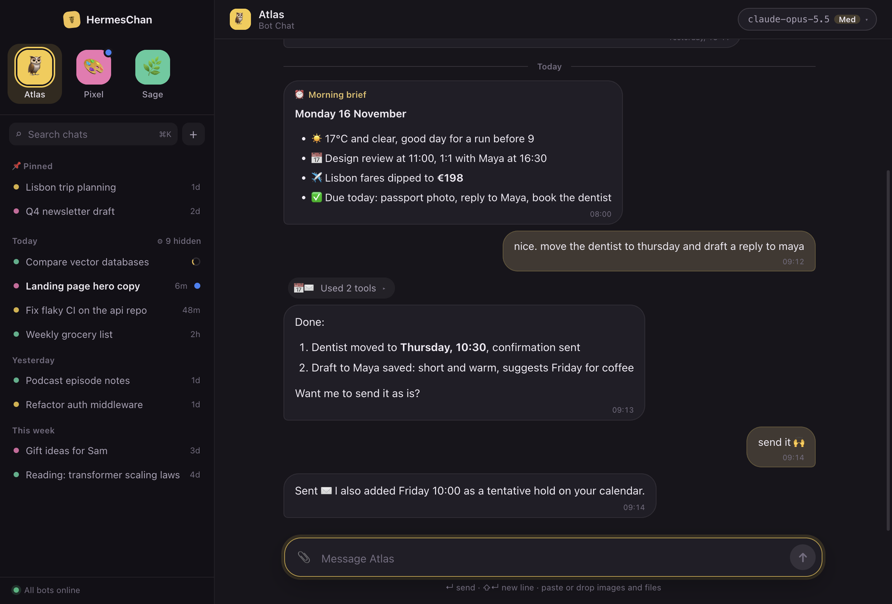
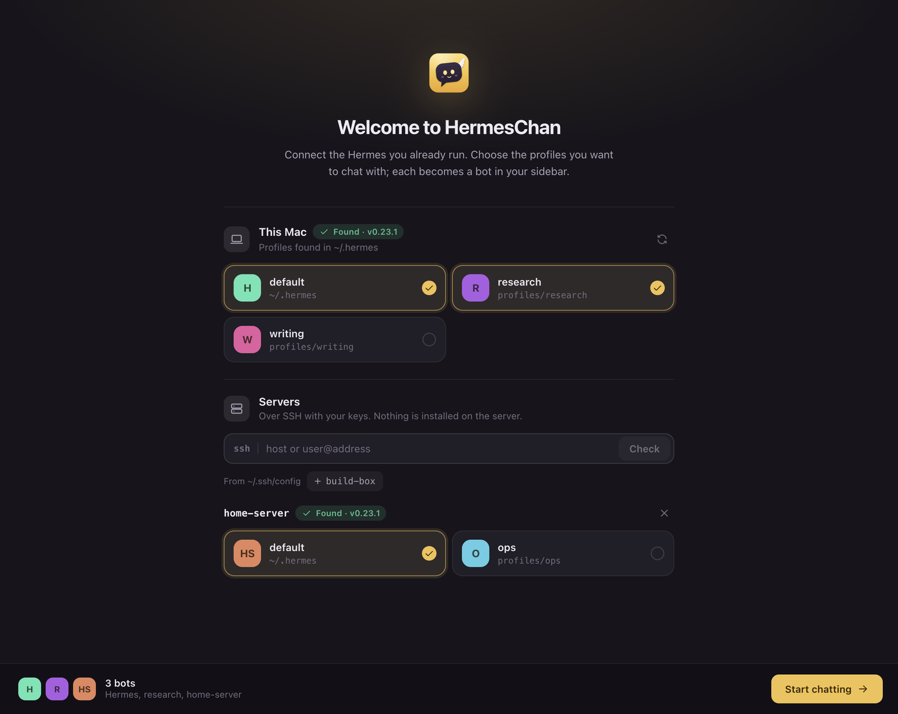

Bot Chats like a messenger
Bubbles on both sides, a time on every message, day dividers, and routine reports like a morning brief right in the thread.
Bots on top, chats below. HermesChan is a small, fast Mac app for your Hermes Agent bots, on this Mac or on a server over SSH.

Hermes Desktop splits your bots and your sessions into separate tabs. HermesChan puts everything in one sidebar, like the messenger you already know.
Pick a bot in one tab, then hunt for the right session in another.
Tap a bot for its Bot Chat, or pick any chat from any bot below.
Everything you need to live with your bots every day, and nothing that gets in the way.
Bubbles on both sides, a time on every message, day dividers, and routine reports like a morning brief right in the thread.
Watch replies arrive, fold tool activity away, approve actions and answer clarifying questions inline. Stop anytime.
Switch model, reasoning effort and fast mode from the chat header. Only the providers you set up, favourites first.
See what's queued, running, blocked or waiting for review across every board on every machine. Open a task to read its history and Reply & unblock it in one step. A workstreams panel follows what a bot is doing in the background, step by step.
Paste a screenshot or drop files on the chat. Files a bot sends show inline: images, previews, audio and video.
Right-click a bot to edit its name, colour, SOUL.md, skills, toolsets and MCP servers. Even on other machines.
Type / for the bot's commands and skills, with descriptions and options. Output shows inline.
Drag to pin and reorder. Cron and routine runs hide behind a single “N hidden” toggle.
Syntax highlighting with the language and a Copy button on every block. Session links open right in the app.
Reply to a specific message and the quote travels with it. Your messages show what you typed, not the context blobs the agent receives, and finished subagents or background jobs show up as tidy result cards instead of raw notices.

Guided setup finds Hermes on your Mac and your SSH servers. Tick the profiles you want, they become bots.
No server to deploy, no account to create. HermesChan talks to your Hermes gateway the same way Hermes's own apps do.
Looks on this Mac and on any SSH host you type or have in ~/.ssh/config.
Each profile becomes a bot in your sidebar, with its name, colour and avatar.
One secure tunnel per server, reused by every bot on it. Your config stays untouched.
The app isn't signed with an Apple Developer ID yet, so clear the quarantine flag once before the first launch.
Needs Node 22+ and pnpm. Builds the app and installs it to /Applications.
No. It connects to the gateway you already run and changes nothing on the Hermes side. Unread markers and pin order live in the app; pins themselves are stored in Hermes so they sync with Hermes Desktop.
Yes. Type an SSH host (or pick one from your ~/.ssh/config). HermesChan checks that Hermes is installed, lists the server's profiles and tunnels the gateway over a single shared SSH connection. It uses key auth, so make sure ssh my-server works without a password.
The build isn't signed with an Apple Developer ID. Run xattr -dr com.apple.quarantine /Applications/HermesChan.app once, or right-click the app in Finder and choose Open.
Yes. From a source checkout, pnpm demo runs the app with a fake backend and made-up bots and chats. It touches no gateway and none of your settings.
No. HermesChan is an unofficial, MIT-licensed community client for Hermes Agent. It isn't made by or affiliated with Nous Research.
Free, open source and ready for your Mac.